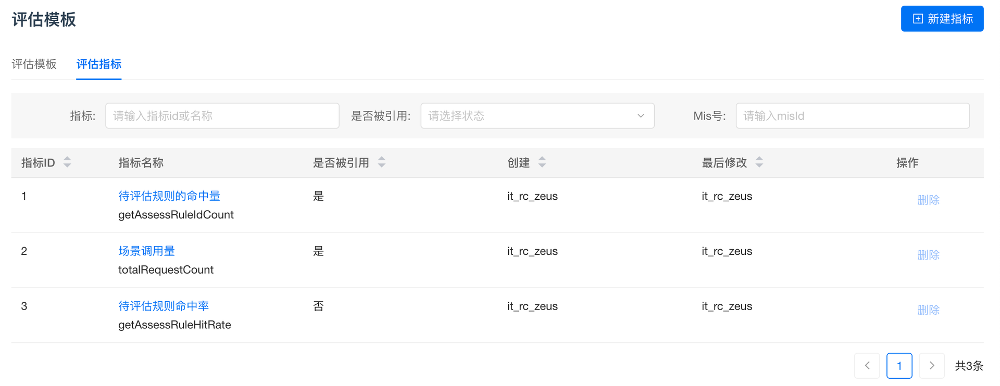
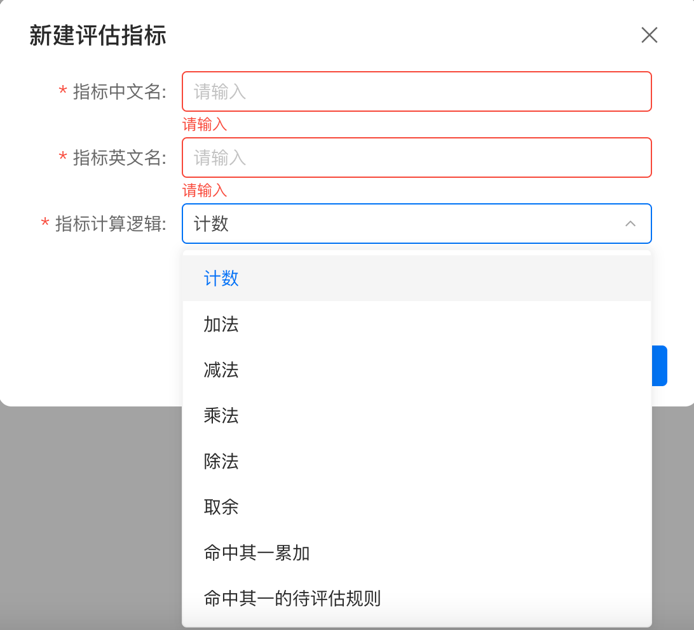
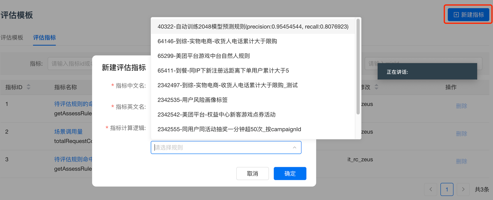
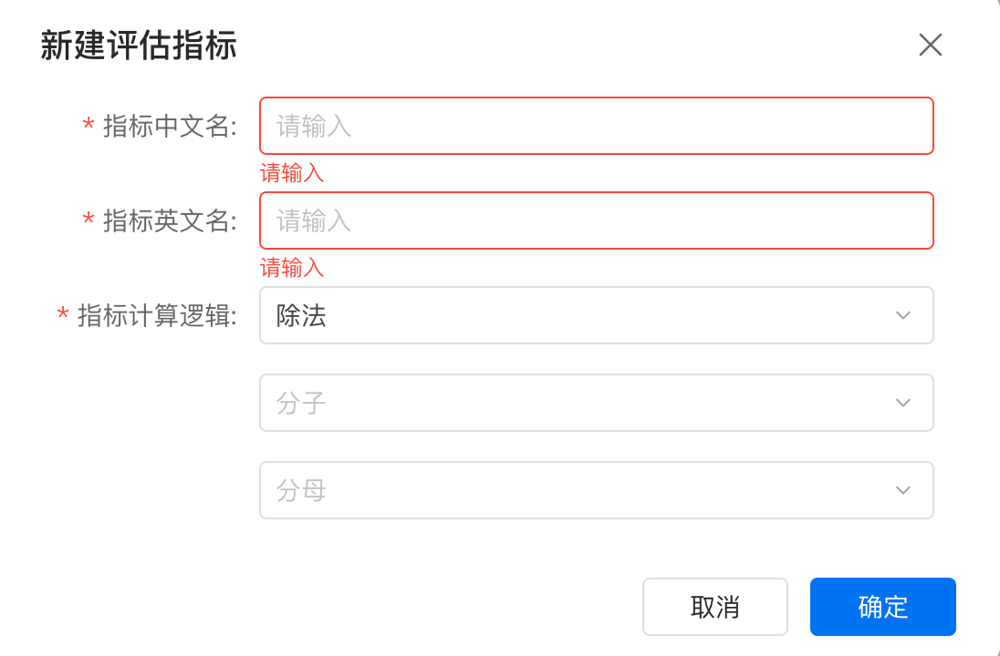
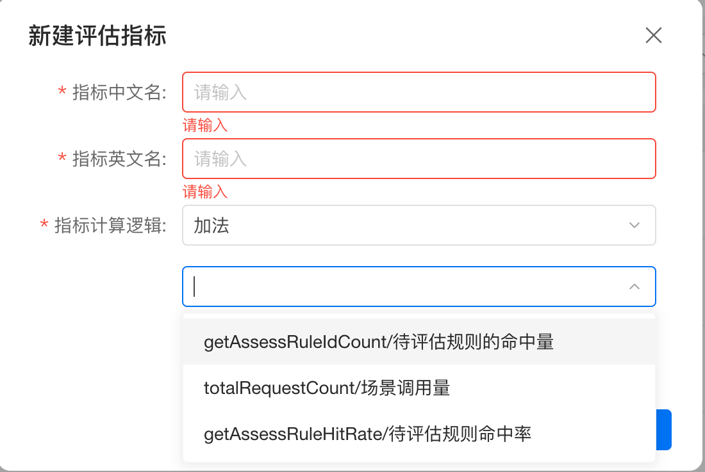
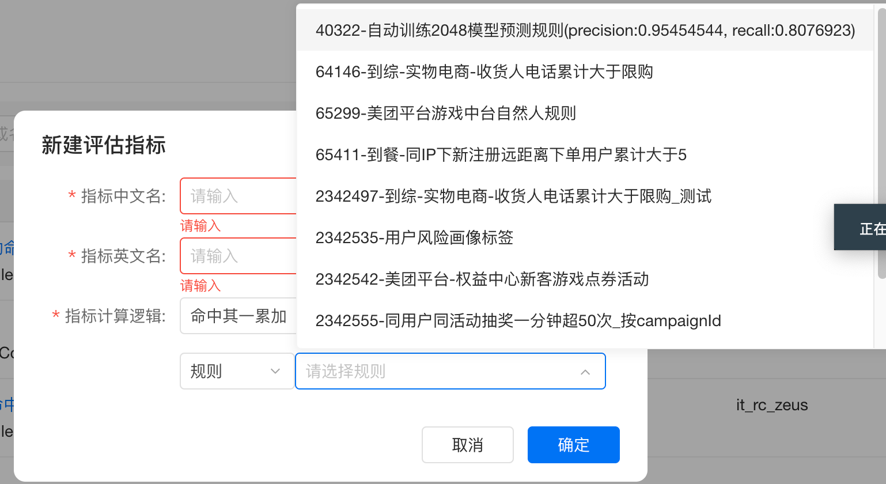
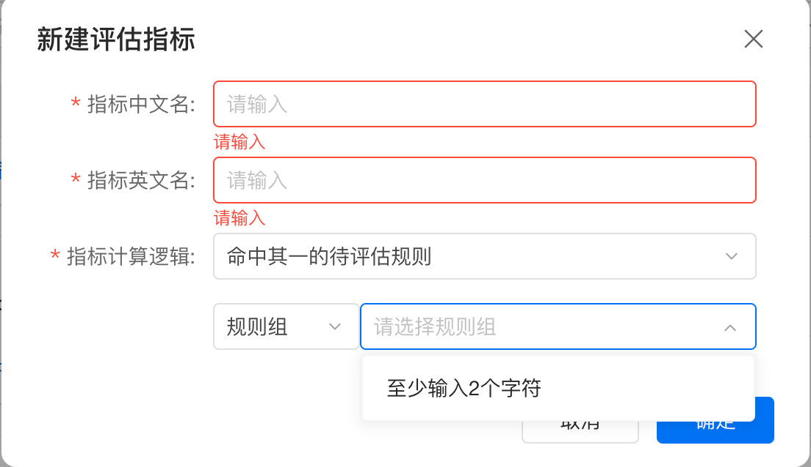

策略评估-评估指标
一、背景
相见策略评估的背景
二、名词解释
评估指标：
默认指标：如果生成评估任务，无论业务方是否配置，系统都会默认计算
自定义指标：用户用系统指定的运算符，自定义配置的指标
三、操作指南
1.用户操作流程说明
系统默认指标
|
说明
|
页面
|
|
入口：
zeus-->策略评估-->评估模板-->评估指标tab
|
指标名
|
指标说明
|
|
待评估规则的命中量
getAssessRuleIdCount
|
以请求（request_id）维度进行不去重统计待评估的规则的命中量
|
|
场景调用量
totalRequestCount
|
以请求（request_id）维度进行不去重统计待评估规则所在场景的流量
|
|
待评估规则命中率
getAssessRuleHitRate
|
getAssessRuleIdCount/totalRequestCount
待评估规则命中量/场景调用量
|
|

|
自定义指标
|
|
说明
|
页面
|
|
|
计数
- 以请求（request_id）维度进行计数，不去重
- 可以计数指定规则的命中量，前提是计算该指标的评估任务所过的场景中有该规则，不区分这个规则是标记状态还是生效状态
|


|
|
|
加法/减法/乘法/除法/取余
- 针对这5种计算方法，会带出两个输入框，输入框为下拉选项，选项为已经有的指标
- 针对除法，四舍五入保留两位小数；
|


|
|
|
命中其一累加/命中其一的待评估规则
-
上述两种算子类似于sql中计数时 where条件的in语法
select count(*) from table where column_name1 in (condition1, condition2.....)
区别在于：
命中其一累加：仅以请求（request_id）维度，统计命中后面条件中的规则的数量
命中其一的待评估规则：仅以请求（request_id）维度，统计命中后面条件中的规则且命中待评估规则的数量
- 支持选择规则/规则组，可以多选规则id/规则组id
- 如果选择规则id，后面仅支持多选规则id；
- 如果选择规则组id，近支持多选规则组id，实际计算时，会统计规则组里管理的所有规则id
|


|
2.特殊说明
四、FAQ